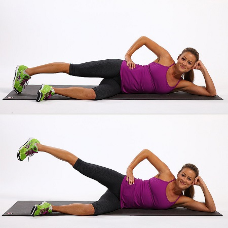

Tipos de ejercicios de piernas
Homepage
Products
Services
Clients
Support
Welcome to Tipos de ejercicios de piernas
2021.06.22 15:36

<div class="mc_vtvc_th b_canvas"><div class="cico" style="width:234px;height:131px;"><div class="rms_iac" style="height:131px;line-height:131px;width:234px;" data-height="131" data-width="234" data-alt="3 ejercicios para tonificar tus piernas según el tipo al que pertenezcas" data-role="presentation" data-class="rms_img" data-src="https://tse2.mm.bing.net/th?id=OVP.GUxI-hnlnzmBzDOU7-zdrAEsDh" frameborder="0" allow="accelerometer; autoplay; encrypted-media; gyroscope; picture-in-picture" allowfullscreen>
Menu
Ejercicios para mejorar la resistencia - Ocean Reef - San Bartolo
EJERCICIOS PARA PIERNAS EN CASA - YouTube
Ejercicios para cuádriceps: los 6 más efectivos para .
7 ejercicios para fortalecer las piernas - Clarín
6 Ejercicios para fortalecer las piernas en casa - Entrenarme
11 ejercicios para tonificar piernas en el gimnasio - El blog del .
5 ejercicios para piernas| OCU
¡LOS 3 MEJORES EJERCICIOS PARA PIERNA! - YouTube
▷ Mejores 25 ejercicios para piernas y glúteos [Actualizado .
10 ejercicios para fortalecer glúteos y piernas (en casa .
Ejercicios para mejorar la resistencia - Ocean Reef - San Bartolo
EJERCICIOS PARA PIERNAS EN CASA - YouTube
Ejercicios para cuádriceps: los 6 más efectivos para .
7 ejercicios para fortalecer las piernas - Clarín
6 Ejercicios para fortalecer las piernas en casa - Entrenarme
11 ejercicios para tonificar piernas en el gimnasio - El blog del .
5 ejercicios para piernas| OCU
¡LOS 3 MEJORES EJERCICIOS PARA PIERNA! - YouTube
▷ Mejores 25 ejercicios para piernas y glúteos [Actualizado .
10 ejercicios para fortalecer glúteos y piernas (en casa .